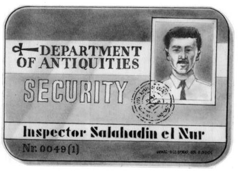
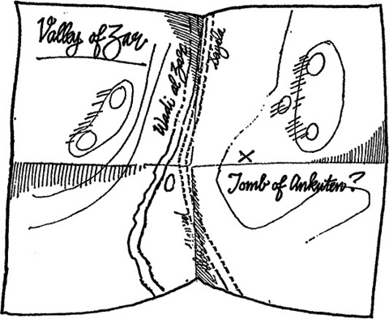

2
Listen to Part 1:

Chiếc hộp mất tích
Salahadin mặc áo khoác và nhanh chóng rời khỏi phòng làm việc. Trời bên ngoài rất nóng. Một cơn gió nóng, đầy bụi thổi qua những tòa nhà cao tầng. Salahadin nhảy lên một chiếc taxi. Đường phố tắc nghẽn những chiếc xe hơi và chiếc taxi di chuyển rất chậm. Mất rất nhiều thời gian để tới được Khách sạn Nile.
Một cảnh sát đang đứng ở cửa khách sạn.
Cảnh sát nói: "Tôi rất tiếc. Không ai được phép vào khách sạn."
Salahadin đưa cho cảnh sát xem thẻ căn cước của anh ta.

Cảnh sát đưa Salahadin đến gặp chỉ huy của mình. May thay, Salahadin quen sĩ quan này. Anh ta là thanh tra Ahmed, bạn học cũ của Salahadin.
Ahmed đưa Salahadin lên tầng để đến phòng của Pearson. Pearson đang nằm trên giường. Có một con dao cắm vào ngực anh ta.
Ahmed hỏi Salahadin: "Anh quan tâm đến người đàn ông này vì sao? Anh quen anh ta à?"
Listen to Part 2:
Salahadin trả lời: "Anh ta tên là Pearson. Anh ta là nhà khảo cổ học. Anh ta đã làm việc ở phía nam. Anh ta sắp rời khỏi Ai Cập nên tôi muốn gặp anh ta."
Ahmed hỏi Salahadin: "Anh ta bị sát hại vì sao?"
Salahadin trả lời: "Tôi không biết."
Có một số hộp để sát tường. Salahadin chỉ tay về chúng.
Salahadin nói: "Có lẽ có thứ gì đó giá trị trong những chiếc hộp này. Chúng ta phải mở chúng ra."
Ahmed gọi hai cảnh sát vào và họ bắt đầu mở những chiếc hộp.
Salahadin nhìn kỹ khắp phòng. Có một số tờ giấy trên bàn cạnh giường. Salahadin cầm chúng lên. Dưới những tờ giấy là một tấm bản đồ. Trên bản đồ ghi dòng chữ: "Thung lũng Zar".
Salahadin nghĩ: Những thứ này có thể quan trọng. Tôi sẽ mang chúng theo mình và xem xét chúng sau.
Salahadin gấp lại những tờ giấy và tấm bản đồ rồi cẩn thận bỏ chúng vào ví.
Lúc này, các cảnh sát đã mở hết các hộp. Chẳng có thứ gì quan trọng bên trong. Những chiếc hộp đựng đầy xẻng và những thứ khác để đào đất.
Listen to Part 3:
Salahadin nói: "Chẳng có thứ gì quan trọng hoặc giá trị trong những chiếc hộp này. Chúng ta phải nói chuyện với toàn bộ nhân viên khách sạn. Có lẽ một trong số họ đã thấy điều gì bất thường."
Người quản lý đưa cả nhân viên khách sạn đến gặp Ahmed và Salahadin. Họ hỏi rất nhiều câu hỏi nhưng không thu được thông tin gì quan trọng.
Bản đồ của Pearson

Sau đó, Salahadin nảy ra ý tưởng.
Anh hỏi người quản lý: "Ai mang những chiếc hộp này vào phòng này?"
Người quản lý đưa hai nhân viên khuân vác đến.
Salahadin hỏi những người khuân vác: "Các anh có mang những chiếc hộp này vào phòng này không?"
Họ trả lời: "Có."
Listen to Part 4:
Salahadin hỏi: "Có bao nhiêu hộp?"
Nhân viên khuân vác đầu tiên trả lời: "Sáu hộp. Tôi mang ba hộp và bạn tôi mang ba hộp."
Salahadin nhìn vào các hộp. Có sáu chiếc. Không ai lấy đi một chiếc hộp nào.
Nhân viên khuân vác thứ hai nói: "Chờ một chút. Anh nhầm rồi. Có bảy hộp. Anh mang ba hộp, tôi mang ba hộp."
Ahmed mỉm cười nói: "Nhưng thế thì chỉ có sáu hộp chứ không phải bảy. Anh không biết đếm sao?"
Nhân viên khuân vác trả lời: "Tôi biết đếm. Có bảy hộp. Chính ông Pearson đã mang một hộp vào phòng. Đó là một chiếc hộp nặng, nhưng nhỏ hơn những chiếc khác."
Salahadin nói với Ahmed: "Đó là chiếc hộp đã mất. Có vật gì đó có giá trị bên trong chiếc hộp thứ bảy đó. Khi chúng ta tìm thấy chiếc hộp thứ bảy, chúng ta cũng sẽ tìm ra kẻ đã gây án."
Mục lục
- Bìa sách
- Trang tiêu đề
- Trang bản quyền
- Mục lục
- Ghi chú giới thiệu
- 1 Salahadin lo lắng
- 2 Chiếc hộp bị mất
- 3 Tài xế taxi
- 4 Thuyền đến Beirut
- 5 Con mèo đen
- 6 Ở Beirut
- 7 Con đường đến Ba'albek
- 8 Câu chuyện của Borkman
- 9 Từ Beirut đến Athens
- 10 Salahadin tìm thấy Peterson
- 11 Salahadin tìm thấy con mèo đen
- 12 Cái chết trên Syria
- 13 Không làm phiền
- 14 Trở về Cairo
- 15 Kết thúc
- Điểm để hiểu